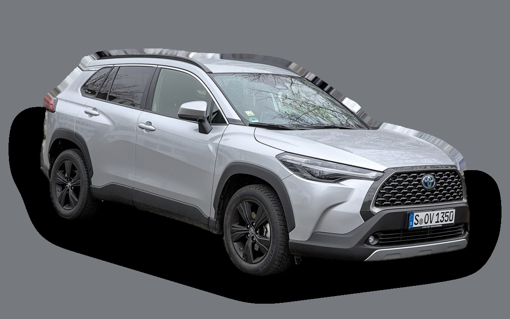

Vad kostar en Toyota Corolla Cross per månad?
En Toyota Corolla Cross från 2023 kostar cirka 3 344 kr i månaden, allt inräknat.


Månadskostnad per årsmodell
| Årsmodell | Version i beräkningen | Pris | Per månad | Betyg |
|---|---|---|---|---|
| 2026 | Hybrid 140, Active | 361 900 kr | 3 839 kr | C |
| 2023 | Hybrid 140, Active | 330 000 kr | 3 344 kr | C |
Räknat på 5 års ägande och 1 250 mil per år, med bränslepriser från 2026-10-22. Månadskostnaden innehåller värdeminskning, drivmedel, service och reparationer, försäkring och fordonsskatt.
Så fördelas kostnaden för en 2023:a
- Värdeminskning: 1 398 kr/mån
- Drivmedel: 1 078 kr/mån
- Service och reparationer: 338 kr/mån
- Försäkring: 491 kr/mån
- Fordonsskatt: 39 kr/mån
Leasa eller köpa ny?
Toyota Easy Privatleasing erbjuder Corolla Cross Hybrid 140 Active från 4 595 kr i månaden i 36 månader och 1 500 mil per år. Så mycket kostar det jämfört med att köpa samma bil ny för 361 900 kr och sälja den efter 36 månader, räknat på 1 250 mil per år och 5 procents ränta.
Köpa är billigast 1 189 kr mindre per månad, 42 804 kr på 36 månader.
| Per månad | Leasa | Köpa |
|---|---|---|
| Leasingavgift, 1 250 mil per år | 4 595 kr | – |
| Uppläggnings- och aviavgift | 81 kr | – |
| Värdeminskning | – | 1 815 kr |
| Ränta på pengarna, 5 % | – | 1 372 kr |
| Service och reparationer | ingår | 301 kr |
| Drivmedel | 1 078 kr | 1 078 kr |
| Försäkring | 553 kr | 553 kr |
| Fordonsskatt | 396 kr | 396 kr |
| Totalt per månad | 6 702 kr | 5 513 kr |
| Totalt på 36 månader | 241 272 kr | 198 468 kr |
Erbjudandet gäller 1 500 mil per år. Kör du mindre blir leasingavgiften densamma. Toyota Easy Privatleasing: Corolla Cross Hybrid 140 Active, 36 månader, 1 500 mil per år, service ingår, fast avgift. Uppläggningsavgift 795 kr och aviavgift 59 kr i månaden (uppskattat, beloppen står inte i erbjudandet). Källa: toyota.se, avläst 26 oktober 2026, gäller till och med 11 januari 2027.
Köpa: 361 900 kr för en ny bil i samma version, och 296 567 kr tillbaka när du säljer den efter 3 år. Restvärdet bygger på annonspriserna för 3 år gamla bilar, justerat för att du kör 3 750 mil på 3 år i stället för typiska 5 500 mil. Räntan är vad pengarna kostar: ränta på ett billån, eller räntan du går miste om på sparade pengar. Drivmedel, försäkring och skatt är desamma. Övermil och onormalt slitage betalas när leasingbilen lämnas tillbaka, och byter du in en köpt bil hos en handlare får du oftast mindre än annonspriset.
Räkna med din egen körsträcka och ränta · Alla leasingbilar jämförda
Begagnatpriser i annonser
| Årsmodell | Medianpris | Annonser | Typiskt miltal |
|---|---|---|---|
| 2026 | 369 900 kr | 15 | 1 000 mil |
| 2025 | 384 900 kr | 38 | 1 400 mil |
| 2024 | 359 400 kr | 25 | 4 100 mil |
| 2023 | 339 900 kr | 47 | 5 400 mil |
Medianpriset i svenska annonser per årsmodell i oktober 2026 (källa: Blocket). Annonspriser är utgångspriser, och slutpriset kan bli lägre.
Motorer och versioner
| Motor | Drivmedel | Effekt | 0–100 km/h | Förbrukning (WLTP) | Räckvidd | Årsmodeller | Pristillägg |
|---|---|---|---|---|---|---|---|
| Hybrid 140 | Hybrid | 140 hk | 9,9 s | 5 l/100 km | – | från 2023 | – |
| Hybrid 197 | Hybrid | 197 hk | 8,1 s | 5,2 l/100 km | – | från 2023 | +30 000 kr |
| Hybrid 197 AWD-i | Hybrid | 197 hk | 7,6 s | 5,4 l/100 km | – | från 2023 | +42 000 kr |
- Utrustning: Active, Style (+28 000 kr), Executive (+54 000 kr)
Fakta
- Kaross
- SUV
- Årsmodeller
- sedan 2023
- Nypris från
- 361 900 kr
- Bagage
- 433 liter
- Euro NCAP
- 5 av 5 stjärnor
- Nybilsgaranti
- 10 år
- Driftsäkerhet
- 5 av 5
- Helförsäkring, uppskattning
- 6 900 kr/år
- Service, uppskattning
- 3 500 kr/år
Vanliga fel att ha koll på
- Elektrisk vattenpump (hybrid), reparation cirka 6 000 kr
- Hybridbatteriet tappar celler, reparation cirka 25 000 kr
- Rost på broms- och bränsleledningar, reparation cirka 5 500 kr
Felen gäller vissa motorer och årsmodeller. I kalkylatorn räknas risken för just den version du väljer.
Fördelar och nackdelar
Fördel
Rymligare än C-HR och lika driftsäker.
Nackdel
Inte särskilt rolig att köra.
Liknande bilar
 Tesla Model Y3 315 kr/mån som 2023:a
Tesla Model Y3 315 kr/mån som 2023:a Volkswagen ID.43 312 kr/mån som 2023:a
Volkswagen ID.43 312 kr/mån som 2023:a Peugeot 20083 395 kr/mån som 2023:a
Peugeot 20083 395 kr/mån som 2023:a Nissan Juke3 291 kr/mån som 2023:a
Nissan Juke3 291 kr/mån som 2023:a Skoda Enyaq3 290 kr/mån som 2023:a
Skoda Enyaq3 290 kr/mån som 2023:a Volvo EX403 410 kr/mån som 2023:a
Volvo EX403 410 kr/mån som 2023:a
Uppdaterad 2026-10-29 · annonsdata okt 2026